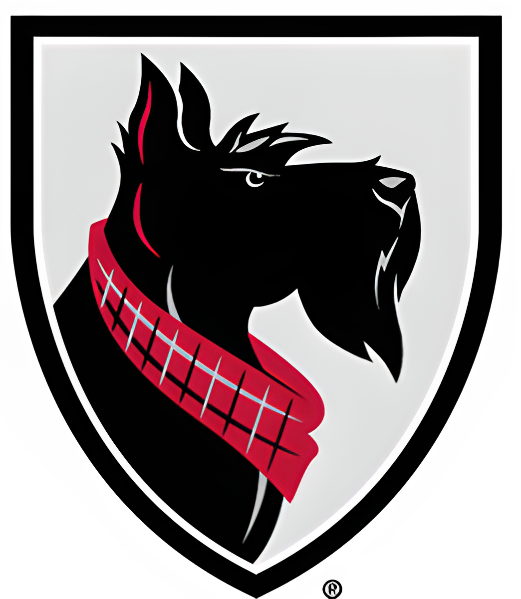
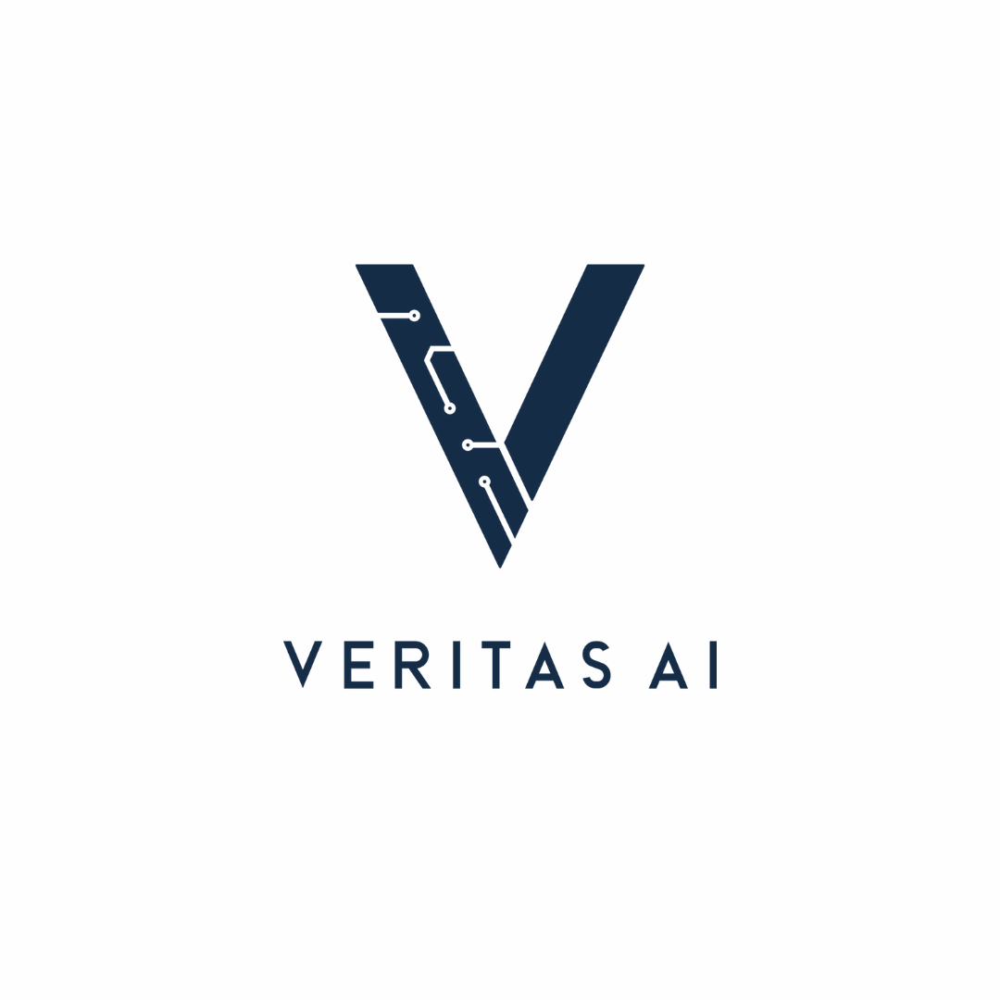
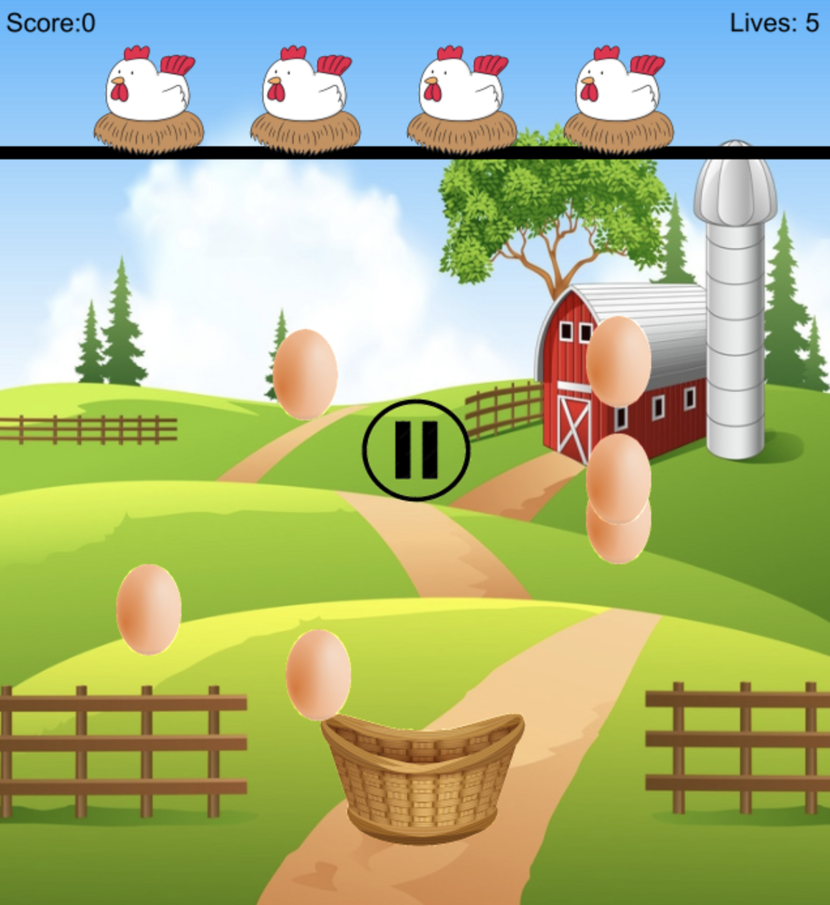

Project Portfolio

TDG Game @ DDM Lab
- Built a complete object-oriented simulation framework with abstract base classes, inheritance hierarchies, and modular components for cybersecurity research
- Developed a DAG-based multi-agent coordination system enabling complex temporal dependencies, synchronization requirements, and information flow patterns between agents
- Implemented realistic cybersecurity scenario modeling with authentic attack kill-chains, defensive mechanisms, and enterprise network topologies
- Created dynamic team configuration capabilities that automatically modify agent behaviors based on dependency specifications and organizational structures

Back-end Enginner @ Tartan Hacks
- Developed the backend infrastructure for a CMU hackathon, ensuring robust API integration to support participant activities.
- Utilized backend frameworks such as Node.js and Express.js to build scalable and maintainable server-side applications.
- Developed functionalities using PHP for server-side scripting and PostgreSQL for reliable database management.

AI scholar @ Veritas AI
- Engineered a Python-based neural network achieving 90% accuracy on the CIFAR-10 image classification dataset.
- Utilized hyperparameter tuning and regularization to maximize model performance and reduce overfitting.
- Led a team of 6 students, encouraging collaboration and driving project milestones in a dynamic group environment.
- Implemented scalable AI models using Python libraries like TensorFlow, Keras, and PyTorch.

Simple Game
Built a simple egg-catching game using CMU graphics package.